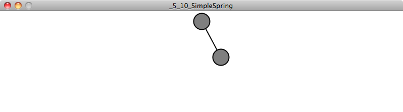
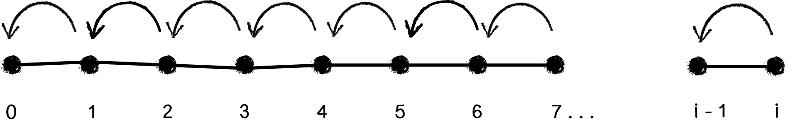

“A library implies an act of faith/Which generations still in darkness hid/Sign in their night in witness of the dawn.”
— Victor Hugo
Before we move on to anything else, let’s revisit some of the things we’ve done in the first four chapters. We have:
Learned about concepts from the world of physics — What is a vector? What is a force? What is a wave? etc.
Understood the math and algorithms behind such concepts.
Implemented the algorithms in Processing with an object-oriented approach.
These activities have yielded a set of motion simulation examples, allowing us to creatively define the physics of the worlds we build (whether realistic or fantastical). Of course, we aren’t the first to try this. The world of computer graphics and programming is full of source code dedicated to simulation. Just try Googling “open-source physics engine” and you could spend the rest of your day pouring over rich and complex code. And so we must ask the question: If a code library will take care of physics simulation, why should we bother learning how to write any of the algorithms ourselves?
Here is where the philosophy behind this book comes into play. While many of the libraries out there give us physics (and super awesome advanced physics at that) for free, there are significant reasons for learning the fundamentals from scratch before diving into libraries. First, without an understanding of vectors, forces, and trigonometry, we’d be completely lost just reading the documentation of a library. Second, even though a library may take care of the math for us, it won’t necessarily simplify our code. As we’ll see in a moment, there can be a great deal of overhead in simply understanding how a library works and what it expects from you code-wise. Finally, as wonderful as a physics engine might be, if you look deep down into your hearts, it’s likely that you seek to create worlds and visualizations that stretch the limits of imagination. A library is great, but it provides a limited set of features. It’s important to know both when to live within limitations in the pursuit of a Processing project and when those limits prove to be confining.
This chapter is dedicated to examining two open-source physics libraries—Box2D and toxiclibs’ VerletPhysics engine. With each library, we’ll evaluate its pros and cons and look at reasons why you might choose one of these libraries for a given project.
What Is Box2D and When Is It Useful?
Box2D began as a set of physics tutorials written in C++ by Erin Catto for the Game Developer’s Conference in 2006. Over the last five years it has evolved into an rich and elaborate open-source physics engine. It’s been used for countless projects, most notably highly successful games such as the award-winning puzzle game Crayon Physics and the runaway mobile and tablet hit Angry Birds.
One of the key things to realize about Box2D is that it is a true physics engine. Box2D knows nothing about computer graphics and the world of pixels; it is simply a library that takes in numbers and spits out more numbers. And what are those numbers? Meters, kilograms, seconds, etc. All of Box2D’s measurements and calculations are for real-world measurements—only its “world” is a two-dimensional plane with top, bottom, left, and right edges. You tell it things like: “The gravity of our world is 9.81 newtons per kilogram, and a circle with a radius of four meters and a mass of fifty kilograms is located ten meters above the world’s bottom.” Box2D will then tell you things like: “One second later, the rectangle is at five meters from the bottom; two seconds later, it is ten meters below,” etc. While this provides for an amazing and realistic physics engine, it also necessitates lots of complicated code in order to translate back and forth between the physics “world” (a key term in Box2D) and the world we want to draw on —the “pixel” world of Processing.
So when is it worth it to have this additional overhead? If I just want to simulate a circle falling down a Processing window with gravity, do I really need to write all the extra Box2D code just to get that effect? Certainly, the answer is no. We saw how to do this rather easily in the first chapter of this book. Let’s consider another scenario. What if I want to have a hundred of those circles falling? And what if those circles aren’t circles at all, but irregularly shaped polygons? And what if I want these polygons to bounce off each other in a realistic manner when they collide?
You may have noticed that the first four chapters of this book, while covering motion and forces in detail, has skipped over a rather important aspect of physics simulation—collisions. Let’s pretend for a moment that you aren’t reading a chapter about libraries and that we decided right now to cover how to handle collisions in a particle system. We’d have to evaluate and learn two distinct algorithms that address these questions:
How do I determine if two shapes are colliding (i.e. intersecting)?
How do I determine the shapes’ velocity after the collision?
If we’re thinking about shapes like rectangles or circles, question #1 isn’t too tough. You’ve likely encountered this before. For example, we know two circles are intersecting if the distance between them is less than the sum of their radii.
OK. Now that we know how to determine if two circles are colliding, how do we calculate their velocities after the collision? This is where we’re going to stop our discussion. Why, you ask? It’s not that understanding the math behind collisions isn’t important or valuable. (In fact, I’m including additional examples on the website related to collisions without a physics library.) The reason for stopping is that life is short (let this also be a reason for you to consider going outside and frolicking instead of programming altogether). We can’t expect to master every detail of physics simulation. And while we could continue this discussion for circles, it’s only going to lead us to wanting to work with rectangles. And strangely shaped polygons. And curved surfaces. And swinging pendulums colliding with springy springs. And and and and and.
Working with collisions in our Processing sketch while still having time to spend with our friends and family—that’s the reason for this chapter. Erin Catto spent years developing solutions to these kinds of problems so you don’t need to engineer them yourselves, at least for now.
In conclusion, if you find yourself describing an idea for a Processing sketch and the word “collisions” comes up, then it’s likely time to learn Box2D. (We’ll also encounter other words that might lead you down this path to Box2D, such as “joint,” “hinge,” “pulley,” “motor,” etc.)
Getting Box2D in Processing
So, if Box2D is a physics engine that knows nothing about pixel-based computer graphics and is written in C++, how are we supposed to use it in Processing?
The good news is that Box2D is such an amazing and useful library that everyone wants to use it—Flash, Javascript, Python, Ruby programmers. Oh, and Java programmers. There is something called JBox2D, a Java port of Box2D. And because Processing is built on top of Java, JBox2D can be used directly in Processing!
This is all you need to get started writing Box2D code in Processing. However, as we are going to see in a moment, there are several pieces of functionality we’ll repeatedly need in our Processing code, and so it’s worth having one additional layer between our sketches and JBox2D. I’m calling this PBox2D—a Processing Box2D “helper” library included as part of this book’s code example downloads.
It’s important to realize that PBox2D is not a Processing wrapper for all of Box2D. After all, Box2D is a thoughtfully organized and well-structured API and there’s no reason to take it apart and re-implement it. However, it’s useful to have a small set of functions that help you get your Box2D world set up, as well as help you figure out where to draw your Box2D shapes. And this is what PBox2D will provide.
I should also mention before we move forward that there are other Processing libraries that wrap Box2D for you. One I would recommend taking a look at is Fisica by Ricard Marxer.
Box2D Basics
Do not despair! We really are going to get to the code very soon, and in some ways we’ll blow our previous work out of the water. But before we’re ready to do that, it’s important to walk through the overall process of using Box2D in Processing. Let’s begin by writing a pseudocode generalization of all of our examples in Chapters 1 through 4.
SETUP:
Create all the objects in our world.
DRAW:
Calculate all the forces in our world.
Apply all the forces to our objects (F = M * A).
Update the locations of all the objects based on their acceleration.
Draw all of our objects.
Great. Let’s rewrite this pseudocode as it will appear in our Box2D examples.
SETUP:
Create all the objects in our world.
DRAW:
Draw all of our objects.
This, of course, is the fantasy of Box2D. We’ve eliminated all of those painful steps of figuring out how the objects are moving according to velocity and acceleration. Box2D is going to take care of this for us! The good news is that this does accurately reflect the overall process. Let’s imagine Box2D as a magic box.
In setup(), we’re going to say to Box2D: “Hello there. Here are all of the things I want in my world.” In draw(), we’re going to politely ask Box2D: “Oh, hello again. If it’s not too much trouble, I’d like to draw all of those things in my world. Could you tell me where they are?”
The bad news: it’s not as simple as the above explanation would lead you to believe. For one, making the stuff that goes in the Box2D world involves wading through the documentation for how different kinds of shapes are built and configured. Second, we have to remember that we can’t tell Box2D anything about pixels, as it will simply get confused and fall apart. Before we tell Box2D what we want in our world, we have to convert our pixel units to Box2D “world” units. And the same is true when it comes time to draw our stuff. Box2D is going to tell us the location of the things in its world, which we then have to translate for the pixel world.
Create everything that lives in our pixel world.
Translate the pixel world into the Box2D world.
Ask Box2D where everything is.
Translate Box2D’s answer into the pixel world.
Draw everything.
Now that we understand that anything we create in our Processing sketch has to be placed into the Box2D world, let’s look at an overview of the elements that make up that world.
World: Manages the physics simulation. It knows everything about the overall coordinate space and also stores lists of every element in the world (see 2-4 below).
Body: Serves as the primary element in the Box2D world. It has a location. It has a velocity. Sound familiar? The Body is essentially the class we’ve been writing on our own in our vectors and forces examples.
Shape: Keeps track of all the necessary collision geometry attached to a body.
Fixture: Attaches a shape to a body and sets properties such as density, friction, and restitution.
Joint: Acts as a connection between two bodies (or between one body and the world itself).
In the next four sections, we are going to walk through each of the above elements in detail, building several examples along the way. But first there is one other important element we should briefly discuss.
6. Vec2: Describes a vector in the Box2D world.
And so here we are, arriving with trepidation at an unfortunate truth in the world of using physics libraries. Any physics simulation is going to involve the concept of a vector. This is the good part. After all, we just spent several chapters familiarizing ourselves with what it means to describe motion and forces with vectors. We don’t have to learn anything new conceptually.
Now for the part that makes the single tear fall from my eye: we don’t get to use PVector. It’s nice that Processing has PVector for us, but anytime you use a physics library you will probably discover that the library includes its own vector implementation. This makes sense, after all; why should Box2D be expected to know about PVector? And in many cases, the physics engine will want to implement a vector class in a specific way so that it is especially compatible with the rest of the library’s code. So while we don’t have to learn anything new conceptually, we do have to get used to some new naming conventions and syntax. Let’s quickly demonstrate a few of the basics in Vec2 as compared to those in PVector.
Let’s say we want to add two vectors together.
PVector
Vec2
PVector a = new PVector(1,-1);
PVector b = new PVector(3,4);
a.add(b);
Vec2 a = new Vec2(1,-1);
Vec2 b = new Vec2(3,4);
a.addLocal(b);
PVector a = new PVector(1,-1);
PVector b = new PVector(3,4);
PVector c = PVector.add(a,b);
Vec2 a = new Vec2(1,-1);
Vec2 b = new Vec2(3,4);
Vec2 c = a.add(b);
How about if we want to multiply and scale them?
PVector
Vec2
PVector a = new PVector(1,-1);
float n = 5;
a.mult(n);
Vec2 a = new Vec2(1,-1);
float n = 5;
a.mulLocal(n);
PVector a = new PVector(1,-1);
float n = 5;
PVector c = PVector.mult(a,n);
Vec2 a = new Vec2(1,-1);
float n = 5;
Vec2 c = a.mul(n);
Magnitude and normalize?
PVector
Vec2
PVector a = new PVector(1,-1);
float m = a.mag();
a.normalize();
Vec2 a = new Vec2(1,-1);
float m = a.length();
a.normalize();
As you can see, the concepts are the same, but the function names and the arguments are slightly different. For example, instead of static and non-static add() and mult(), if a Vec2 is altered, the word “local” is included in the function name—addLocal(), multLocal().
We’ll cover the basics of what you need to know here, but if you are looking for more, full documentation of Vec2 can be found by downloading the JBox2D source code.
Living in a Box2D World
The Box2D World object is in charge of everything. It manages the coordinate space of the world, all of the stuff that lives in the world, and decides when time moves forward in the world.
In order to have Box2D as part of our Processing sketches, the World is the very first thing that needs to be set up. Here is where PBox2D comes in handy and takes care of making the world for us.
PBox2D box2d;
void setup() {
box2d = new PBox2D(this);
box2d.createWorld(); Initializes a Box2D world with default settings
}
When you call createWorld(), PBox2D will set up a default gravity for you (pointing down); however, you can always alter the gravity of your world by saying:
box2d.setGravity(0, -10);
It’s worth noting that gravity doesn’t have to be fixed, nor does it always have to point downwards; you can adjust the gravity vector while your program is running. Gravity can be turned off by setting it to a (0,0) vector.
So, what are those numbers 0 and -10? This should remind us of one of the most important details of using Box2D: the Box2D coordinate system is not your pixel coordinate system! Let’s look at how Box2D and a Processing window think differently of their worlds.
Notice how in Box2D (0,0) is in the center and up is the positive direction along the y-axis! Box2D’s coordinate system is just like that lovely old-fashioned Cartesian one with (0,0) in the center and up pointing in a positive direction. Processing, on the other hand, uses a traditional computer graphics coordinate system where (0,0) is in the top left corner and down is the positive direction along the y-axis. This is why if we want objects to fall down with gravity, we need to give Box2D a gravity force with a negative y-value.
Vec2 gravity = new Vec2(0, -10);
Luckily for us, if we prefer to think in terms of pixel coordinates (which as Processing programmers, we are likely to do), PBox2D offers a series of helper functions that convert between pixel space and Box2D space. Before we move onto the next section and begin creating Box2D bodies, let’s take a look at how these helper functions work.
Let’s say we want to tell Box2D where the mouse is in its world. We know the mouse is located at (mouseX,mouseY) in Processing. To convert it, we say we want to convert a “coordinate” from “pixels” to “world”—coordPixelsToWorld(). Or:
Convert mouseX,mouseY to
Vec2 mouseWorld = box2d.coordPixelsToWorld(mouseX,mouseY);coordinate in Box2D world.
What if we had a Box2D world coordinate and wanted to translate it to our pixel space?
Vec2 worldPos = new Vec2(-10,25);To demonstrate, let’s just make up a world position.Convert to pixel space.This is necessary because ultimately we
Vec2 pixelPos = box2d.coordWorldToPixels(worldPos);are going to want to draw the elements in our window.
ellipse(pixelPos.x, pixelPos.y,16,16);
PBox2D has a set of functions to take care of translating back and forth between the Box2D world and pixels. It’s probably easier to learn about all of these functions during the course of actually implementing our examples, but let’s quickly look over the list of the possibilities.
Scale a dimension (such as height, width, or radius) from Pixels to World
float scalarPixelsToWorld(float val)
Scale a dimension from World to Pixels
float scalarWorldToPixels(float val)
There are also additional functions that allow you to pass or receive a PVector when translating back and forth, but since we are only working with Box2D in the examples in this chapter, it’s easiest to stick with the Vec2 class for all vectors.
Once the world is initialized, we are ready to actually put stuff in the world—Box2D bodies.
Building a Box2D Body
A Box2D body is the primary element in the Box2D world. It’s the equivalent to the Mover class we built on our own in previous chapters—the thing that moves around the space and experiences forces. It can also be static (meaning fixed and not moving). It’s important to note, however, that a body has no geometry; it isn’t anything physical. Rather, bodies have Box2D shapes attached to them. (This way, a body can be a single rectangle or a rectangle attached to a circle, etc.) We’ll look at shapes in a moment; first, let’s build a body.
Step 1: Define a body.
The first thing we have to do is create a “body definition.” This will let us define the properties of the body we intend to make. This may seem a bit awkward at first, but it’s how Box2D is structured. Anytime you want to make a “thing,” you have to make a “thing definition” first. This will hold true for bodies, shapes, and joints.
BodyDef bd = new BodyDef();Make a body definition before making a Body.
Step 2: Configure the body definition.
The body definition is where we can set specific properties or attributes of the body we intend to make. One attribute of a body, for example, is its starting location. Let’s say we want to position the body in the center of the Processing window.
Vec2 center = new Vec2(width/2,height/2);A Vec2 in the center of the Processing window
Danger, danger! I’m not going to address this with every single example, but it’s important to at least point out the perilous path we are taking with the above line of code. Remember, if we are going to tell Box2D where we want the body to start, we must give Box2D a world coordinate! Yes, we want to think of its location in terms of pixels, but Box2D doesn’t care. And so before we pass that position to the body definition, we must make sure to use one of our helper conversion functions.
A Vec2 in the center of the
Vec2 center = box2d.coordPixelsToWorld(width/2,height/2));Processing window converted to Box2D World coordinates!
bd.position.set(center);Setting the position attribute of the Box2D body definition
The body definition must also specify the “type” of body we want to make. There are three possibilities:
Dynamic. This is what we will use most often—a “fully simulated” body. A dynamic body moves around the world, collides with other bodies, and responds to the forces in its environment.
Static. A static body is one that cannot move (as if it had an infinite mass). We’ll use static bodies for fixed platforms and boundaries.
Kinematic. A kinematic body can be moved manually by setting its velocity directly. If you have a user-controlled object in your world, you can use a kinematic body. Note that kinematic bodies collide only with dynamic bodies and not with other static or kinematic ones.
There are several other properties you can set in the body definition. For example, if you want your body to have a fixed rotation (i.e. never rotate), you can say:
bd.fixedRotation = true;
You can also set a value for linear or angular damping, so that the object continuously slows as if there is friction.
bd.linearDamping = 0.8;
bd.angularDamping = 0.9;
In addition, fast-moving objects in Box2D should be set as bullets. This tells the Box2D engine that the object may move very quickly and to check its collisions more carefully so that it doesn’t accidentally jump over another body.
bd.bullet = true;
Step 3: Create the body.
Once we’re done with the definition (BodyDef), we can create the Body object itself. PBox2D provides a helper function for this—createBody().
The Body object is created by passing in the BodyDefinition. (This allows for making multiple bodies from
Body body = box2d.createBody(bd);one definition.)
Step 4: Set any other conditions for the body’s starting state.
Finally, though not required, if you want to set any other initial conditions for the body, such as linear or angular velocity, you can do so with the newly created Body object.
body.setLinearVelocity(new Vec2(0,3));Setting an arbitrary initial velocity
body.setAngularVelocity(1.2);Setting an arbitrary initial angular velocity
Three’s Company: Bodies and Shapes and Fixtures
A body on its own doesn’t physically exist in the world. It’s like a soul with no human form to inhabit. For a body to have mass, we must first define a shape and attach that shape to the body with something known as a fixture.
The job of the Box2D Shape class is to keep track of all the necessary collision geometry attached to a body. A shape also has several important properties that affect the body’s motion. There is density, which ultimately determines that body’s mass. Shapes also have friction and restitution (“bounciness”) which will be defined through a fixture. One of the nice things about Box2D’s methodology, which separates the concepts of bodies and shapes into two separate objects, is that you can attach multiple shapes to a single body in order to create more complex forms. We’ll see this in a future example.
To create a shape, we need to first decide what kind of shape we want to make. For most non-circular shapes, a PolygonShape object will work just fine. For example, let’s look at how we define a rectangle.
Step 1: Define a shape.
PolygonShape ps = new PolygonShape();Define the shape: a polygon.
Next up, we have to define the width and height of the rectangle. Let’s say we want our rectangle to be 150×100 pixels. Remember, pixel units are no good for Box2D shapes! So we have to use our helper functions to convert them first.
float box2Dw = box2d.scalarPixelsToWorld(150);Scale dimensions from pixels to Box2D world.
float box2Dh = box2d.scalarPixelsToWorld(100);
ps.setAsBox(box2Dw, box2Dh);Use setAsBox() function to define shape as a rectangle.
Step 2: Create a fixture.
The shape and body are made as two separate entities. In order to attach a shape to a body, we must make a fixture. A fixture is created, just as with the body, via a fixture definition (i.e. FixtureDef class) and assigned a shape.
FixtureDef fd = new FixtureDef();
fd.shape = ps;The fixture is assigned the PolygonShape we just made.
Once we have the fixture definition, we can set parameters that affect the physics for the shape being attached.
The coefficient of friction for the
fd.friction = 0.3;shape, typically between 0 and 1The Shape’s restitution (i.e. elasticity),
fd.restitution = 0.5;typically between 0 and 1The Shape’s density, measured in
fd.density = 1.0;kilograms per meter squared
Step 3: Attach the shape to the body with the fixture.
Once the fixture is defined, all we have left to do is attach the shape to the body with the fixture by calling the createFixture() function.
body.createFixture(fd);Creates the Fixture and attaches the Shape to the Body object
I should note that Step 2 can be skipped if you do not need to set the physics properties. (Box2D will use default values.) You can create a fixture and attach the shape all in one step by saying:
body.createFixture(ps,1);Creates the Fixture and attaches the Shape with a density of 1
While most of our examples will take care of attaching shapes only once when the body is first built, this is not a limitation of Box2D. Box2D allows for shapes to be created and destroyed on the fly.
Before we put any of this code we’ve been writing into a Processing sketch, let’s review all the steps we took to construct a Body.
Define a body using a BodyDef object (set any properties, such as location).
Create the Body object from the body definition.
Define a Shape object using PolygonShape, CircleShape, or any other shape class.
Define a fixture using FixtureDef and assign the fixture a shape (set any properties, such as friction, density, and restitution).
Attach the shape to the body.
BodyDef bd = new BodyDef();Step 1. Define the body.
bd.position.set(box2d.coordPixelsToWorld(width/2,height/2));
Body body = box2d.createBody(bd);Step 2. Create the body.
PolygonShape ps = new PolygonShape();Step 3. Define the shape.
float w = box2d.scalarPixelsToWorld(150);
float h = box2d.scalarPixelsToWorld(100);
ps.setAsBox(w, h);
FixtureDef fd = new FixtureDef();Step 4. Define the fixture.
fd.shape = ps;
fd.density = 1;
fd.friction = 0.3;
fd.restitution = 0.5;
body.createFixture(fd);Step 5. Attach the shape to the body with the Fixture.
Box2D and Processing: Reunited and It Feels So Good
Once a body is made, it lives in the Box2D physics world. Box2D will always know it’s there, check it for collisions, move it appropriately according to the forces, etc. It’ll do all that for you without you having to lift a finger! What it won’t do, however, is display the body for you. This is a good thing. This is your time to shine. When working with Box2D, what we’re essentially saying is, “I want to be the designer of my world, and I want you, Box2D, to compute all the physics.”
Now, Box2D will keep a list of all the bodies that exist in the world. This can be accessed by calling the World object’s getBodyList() function. Nevertheless, what I’m going to demonstrate here is a technique for keeping your own body lists. Yes, this may be a bit redundant and we perhaps sacrifice a bit of efficiency. But we more than make up for that with ease of use. This methodology will allow us to program like we’re used to in Processing, and we can easily keep track of which bodies are which and render them appropriately. Let’s consider the structure of the following Processing sketch:
This looks like any ol’ Processing sketch. We have a main tab called “Boxes” and a “Boundary” and a “Box” tab. Let’s think about the Box tab for a moment. The Box tab is where we will write a simple class to describe a Box object, a rectangular body in our world.
class Box {
float x,y; Our Box object has an x,y location and a width and a height.
float w,h;
Box(float x_, float y_) {
x = x_; The location is initalized in the constructor via arguments
y = y_;
w = 16;
h = 16;
}
void display() {
fill(175); We draw the Box object using Processing’s rect() function.
stroke(0);
rectMode(CENTER);
rect(x,y,w,h);
}
}
Let’s write a main tab that creates a new Box whenever the mouse is pressed and stores all the Box objects in an ArrayList. (This is very similar to our approach in the particle system examples from Chapter 4.)
A comfortable and cozy Processing sketch that needs a little Box2D
ArrayList<Box> boxes;A list to store all Box objects
void setup() {
size(400,300);
boxes = new ArrayList<Box>();
}
void draw() {
background(255);
if (mousePressed) { When the mouse is pressed, add a new Box object.
Box p = new Box(mouseX,mouseY);
boxes.add(p);
}
for (Box b: boxes) { Display all the Box objects.
b.display();
}
}
Now, here’s our assignment. Take the above example verbatim, but instead of drawing fixed boxes on the screen, draw boxes that experience physics (via Box2D) as soon as they appear.
We’ll need two major steps to accomplish our goal.
Step 1: Add Box2D to our main program (i.e. setup() and draw()).
This part is not too tough. We saw this already in our discussion of building a Box2D world. This is taken care of for us by the PBox2D helper class. We can create a PBox2D object and initialize it in setup().
PBox2D box2d;
void setup() {
box2d = new PBox2D(this); Initialize and create the Box2D world.
box2d.createWorld();
}
Then in draw(), we need to make sure we call one very important function: step(). Without this function, nothing would ever happen! step() advances the Box2D world a step further in time. Internally, Box2D sweeps through and looks at all of the Bodies and figures out what to do with them. Just calling step() on its own moves the Box2D world forward with default settings; however, it is customizable (and this is documented in the PBox2D source).
void draw() {
box2d.step(); We must always step through time!
}
Step 2: Link every Processing Box object with a Box2D Body object.
As of this moment, the Box class includes variables for location and width and height. What we now want to say is:
“I hereby relinquish the command of this object’s position to Box2D. I no longer need to keep track of anything related to location, velocity, and acceleration. Instead, I only need to keep track of a Box2D body and have faith that Box2D will do the rest.”
class Box {
Instead of any of the usual variables,
Body body; we will store a reference to a Box2D body.
float w;
float h;
We don’t need (x,y) anymore since, as we’ll see, the body itself will keep track of its location. The body technically could also keep track of the width and height for us, but since Box2D isn’t going to do anything to alter those values over the life of the Box object, we might as well just hold onto them ourselves until it’s time to draw the Box.
Then, in our constructor, in addition to initializing the width and height, we can go ahead and include all of the body and shape code we learned in the previous two sections!
Box() {
w = 16;
h = 16;
BodyDef bd = new BodyDef(); Build body.
bd.type = BodyType.DYNAMIC;
bd.position.set(box2d.coordPixelsToWorld(mouseX,mouseY));
body = box2d.createBody(bd);
PolygonShape ps = new PolygonShape(); Build shape.
float box2dW = box2d.scalarPixelsToWorld(w/2); Box2D considers the width and height of a rectangle to be the distance from the center to the edge (so half of what we normally think of as width or height).
float box2dH = box2d.scalarPixelsToWorld(h/2);
ps.setAsBox(box2dW, box2dH);
FixtureDef fd = new FixtureDef();
fd.shape = ps;
fd.density = 1;
fd.friction = 0.3; Set physics parameters.
fd.restitution = 0.5;
body.createFixture(fd); Attach the Shape to the Body with the Fixture.
}
OK, we’re almost there. Before we introduced Box2D, it was easy to draw the Box. The object’s location was stored in variables x and y.
void display() { Drawing the object using rect()
fill(175);
stroke(0);
rectMode(CENTER);
rect(x,y,w,h);
}
But now Box2D manages the object’s motion, so we can no longer use our own variables to display the shape. Not to fear! Our Box object has a reference to the Box2D body associated with it. So all we need to do is politely ask the body, “Pardon me, where are you located?” Since this is a task we’ll need to do quite often, PBox2D includes a helper function: getBodyPixelCoord().
Vec2 pos = box2d.getBodyPixelCoord(body);
Just knowing the location of a body isn’t enough; we also need to know its angle of rotation.
float a = body.getAngle();
Once we have the location and angle, it’s easy to display the object using translate() and rotate(). Note, however, that the Box2D coordinate system considers rotation in the opposite direction from Processing, so we need to multiply the angle by -1.
void display() {
Vec2 pos = box2d.getBodyPixelCoord(body); We need the Body’s location and angle.
float a = body.getAngle();
pushMatrix();
translate(pos.x,pos.y); Using the Vec2 position and float angle to translate and rotate the rectangle
rotate(-a);
fill(175);
stroke(0);
rectMode(CENTER);
rect(0,0,w,h);
popMatrix();
}
In case we want to have objects that can be removed from the Box2D world, it’s also useful to include a function to destroy a body, such as:
void killBody() { This function removes a body from the Box2D world.
box2d.destroyBody(body);
}
Fixed Box2D Objects
In the example we just created, the Box objects appear at the mouse location and fall downwards due to Box2D’s default gravity force. What if we wanted to install some immovable boundaries in the Box2D world that would block the path of the Box objects (as in the illustration below)?
Box2D makes this easy for us by providing a means to lock a body (and any associated shapes) in place. Just set the BodyDef object’s type to STATIC.
BodyDef bd = new BodyDef();
When BodyDef type = STATIC, the
bd.type = BodyType.STATIC; Body is locked in place.
We can add this feature to our Boxes example by writing a Boundary class and having each boundary create a fixed Box2D body.
Falling boxes hitting boundaries
class Boundary {
float x,y; A boundary is a simple rectangle with x, y, width, and height.
float w,h;
Body b;
Boundary(float x_,float y_, float w_, float h_) {
x = x_;
y = y_;
w = w_;
h = h_;
BodyDef bd = new BodyDef(); Build the Box2D Body and Shape.
bd.position.set(box2d.coordPixelsToWorld(x,y));
bd.type = BodyType.STATIC; Make it fixed by setting type to STATIC!
b = box2d.createBody(bd);
float box2dW = box2d.scalarPixelsToWorld(w/2);
float box2dH = box2d.scalarPixelsToWorld(h/2);
PolygonShape ps = new PolygonShape();
ps.setAsBox(box2dW, box2dH); The PolygonShape is just a box.
b.createFixture(ps,1); Using the createFixture() shortcut
}
Since we know it can never move, we can just draw it the old-fashioned way, using our original
void display() { variables. No need to query Box2D.
fill(0);
stroke(0);
rectMode(CENTER);
rect(x,y,w,h);
}
}
A Curvy Boundary
If you want a fixed boundary that is a curved surface (as opposed to a polygon), this can be achieved with the shape ChainShape.
The ChainShape class is another shape like PolygonShape or CircleShape, so to include one in our system, we follow the same steps.
Step 1: Define a body.
The body does not need a position; theEdgeShape will take care of that for us.It also does not need a type, as it is STATIC
BodyDef bd = new BodyDef();by default.
Body body = box2d.world.createBody(bd);
Step 2: Define the Shape.
ChainShape chain = new ChainShape();
Step 3: Configure the Shape.
The ChainShape object is a series of connected vertices. To create the chain, we must first specify an array of vertices (each as a Vec2 object). For example, if we wanted a straight line from the left-hand side of our window to the right-hand side, we would just need an array of two vertices: (0,150) and (width,150).
Vec2[] vertices = new Vec2[2];
vertices[0] = box2d.coordPixelsToWorld(0,150);Adding a vertex on the right side of window
vertices[1] = box2d.coordPixelsToWorld(width,150);Adding a vertex on the left side of window
To create the chain with the vertices, the array is then passed into a function called createChain(). (Note that if you want to create a loop where the first vertex connects to the last vertex in a loop, you can use the createLoop() function instead.)
If you don’t want to use the entire array,
chain.createChain(vertices, vertices.length);you can specify a value less than length.
Step 4: Attach the Shape to the body with a Fixture.
A Shape is not part of Box2D unless it is attached to a body. Even if it is a fixed boundary and never moves, it must still be attached. Just as with other shapes, a ChainShape object can be given properties like restitution and friction with a Fixture.
FixtureDef fd = new FixtureDef();
fd.shape = chain;A fixture assigned to the ChainShape
fd.density = 1;
fd.friction = 0.3;
fd.restitution = 0.5;
body.createFixture(fd);
Now, if we want to include a ChainShape object in our sketch, we can follow the same strategy as we did with a fixed boundary. Let’s write a class called Surface:
ChainShape with three hard-coded vertices
class Surface {
ArrayList<Vec2> surface;
Surface() {
surface = new ArrayList<Vec2>();
surface.add(new Vec2(0, height/2+50)); 3 vertices in pixel coordinates
surface.add(new Vec2(width/2, height/2+50));
surface.add(new Vec2(width, height/2));
ChainShape chain = new ChainShape();
Vec2[] vertices = new Vec2[surface.size()]; Make an array of Vec2 for the ChainShape.
for (int i = 0; i < vertices.length; i++) {
vertices[i] = box2d.coordPixelsToWorld(surface.get(i)); Convert each vertex to Box2D World coordinates.
}
chain.createChain(vertices, vertices.length); Create the ChainShape with array of Vec2.
BodyDef bd = new BodyDef(); Attach the Shape to the Body.
Body body = box2d.world.createBody(bd);
body.createFixture(chain, 1);
}
Notice how the above class includes an ArrayList to store a series of Vec2 objects. Even though we fully intend to store the coordinates of the chain in the chain shape itself, we are choosing the ease of redundancy and keeping our own list of those points as well. Later, when we go to draw the Surface object, we don’t have to ask Box2D for the locations of the chain shape’s vertices.
void display() {
strokeWeight(1);
stroke(0);
noFill();
beginShape(); Draw the ChainShape as a series of vertices.
for (Vec2 v: surface) {
vertex(v.x,v.y);
}
endShape();
}
}
What we need in setup() and draw() for the Surface object is quite simple, given that Box2D takes care of all of the physics for us.
PBox2D box2d;
Surface surface;
void setup() {
size(500,300);
box2d = new PBox2D(this);
box2d.createWorld();
surface = new Surface(); Make a Surface object.
}
void draw() {
box2d.step();
background(255);
surface.display(); Draw the Surface.
}
Complex Forms
Now that we’ve seen how easy it is to make simple geometric forms in Box2D, let’s imagine that you want to have a more complex form, such as a little alien stick figure.
There are two strategies in Box2D for making forms that are more advanced than a basic circle or square. One is to use a PolygonShape in a different way. In our previous examples, we used PolygonShape to generate a rectangular shape with the setAsBox() function.
PolygonShape ps = new PolygonShape();
ps.setAsBox(box2dW, box2dH);
This was a good way to start because of the inherent simplicity of working with rectangles. However, a PolygonShape object can also be generated from an array of vectors, which allows you to build a completely custom shape as a series of connected vertices. This works very similarly to the ChainShape class.
Polygon shapes
vertices[0] = box2d.vectorPixelsToWorld(new Vec2(-15, 25));Vec2[] vertices = new Vec2[4]; An array of 4 vectors
vertices[1] = box2d.vectorPixelsToWorld(new Vec2(15, 0));
vertices[2] = box2d.vectorPixelsToWorld(new Vec2(20, -15));
vertices[3] = box2d.vectorPixelsToWorld(new Vec2(-10, -10));
PolygonShape ps = new PolygonShape();Making a polygon from that array
ps.set(vertices, vertices.length);
When building your own polygon in Box2D, you must remember two important details.
Order of vertices! If you are thinking in terms of pixels (as above) the vertices should be defined in counterclockwise order. (When they are translated to Box2D World vectors, they will actually be in clockwise order since the vertical axis is flipped.)
Convex shapes only! A concave shape is one where the surface curves inward. Convex is the opposite (see illustration below). Note how in a convex shape every internal angle must be 180 degrees or less. Box2D is not capable of handling collisions for concave shapes. If you need a concave shape, you will have to build one out of multiple convex shapes (more about that in a moment).
A concave shape can be drawn with multiple convex shapes.
Now, when it comes time to display the shape in Processing, we can no longer just use rect() or ellipse(). Since the shape is built out of custom vertices, we’ll want to use Processing’s beginShape(), endShape(), and vertex() functions. As we saw with the ChainShape, we could choose to store the pixel locations of the vertices in our own ArrayList for drawing. However, it’s also useful to see how we can ask Box2D to report back to use the vertex locations.
void display() {
Vec2 pos = box2d.getBodyPixelCoord(body);
float a = body.getAngle();
Fixture f = body.getFixtureList(); First we get the Fixture attached to the body...
PolygonShape ps = (PolygonShape) f.getShape(); ...then the Shape attached to the Fixture.
rectMode(CENTER);
pushMatrix();
translate(pos.x,pos.y);
rotate(-a);
fill(175);
stroke(0);
beginShape();
for (int i = 0; i < ps.getVertexCount(); i++) { We can loop through that array and convert each vertex from Box2D space to pixels.
Vec2 v = box2d.vectorWorldToPixels(ps.getVertex(i));
vertex(v.x,v.y);
}
endShape(CLOSE);
popMatrix();
}
A polygon shape will get us pretty far in Box2D. Nevertheless, the convex shape requirement will severely limit the range of possibilities. The good news is that we can completely eliminate this restriction by creating a single Box2D body out of multiple shapes! Let’s return to our little alien creature and simplify the shape to be a thin rectangle with a circle on top.
How can we build a single body with two shapes? Let’s first review how we built a single body with one shape.
Step 1: Define the body. Step 2: Create the body. Step 3: Define the shape. Step 4: Attach the shape to the body. Step 5: Finalize the body’s mass.
Attaching more than one shape to a body is as simple as repeating steps 3 and 4 over and over again.
Step 3a: Define shape 1. Step 4a: Attach shape 1 to the body. Step 3b: Define shape 2. Step 4b: Attach shape 2 to the body.
etc. etc. etc.
Let’s see what this would look like with actual Box2D code.
BodyDef bd = new BodyDef();Making the body
bd.type = BodyType.DYNAMIC;
bd.position.set(box2d.coordPixelsToWorld(center));
body = box2d.createBody(bd);
PolygonShape ps = new PolygonShape();Making shape 1 (the rectangle)
float box2dW = box2d.scalarPixelsToWorld(w/2);
float box2dH = box2d.scalarPixelsToWorld(h/2);
sd.setAsBox(box2dW, box2dH);
CircleShape cs = new CircleShape();Making shape 2 (the circle)
cs.m_radius = box2d.scalarPixelsToWorld(r);
body.createFixture(ps,1.0);Attach both shapes with a fixture.
body.createFixture(cs, 1.0);
The above looks pretty good, but sadly, if we run it, we’ll get the following result:
When you attach a shape to a body, by default, the center of the shape will be located at the center of the body. But in our case, if we take the center of the rectangle to be the center of the body, we want the center of the circle to be offset along the y-axis from the body’s center.
This is achieved by using the local position of a shape, accessed via a Vec2 variable called m_p.
Vec2 offset = new Vec2(0,-h/2);Our offset in pixels
offset = box2d.vectorPixelsToWorld(offset);Converting the vector to Box2D world
circle.m_p.set(offset.x,offset.y);Setting the local position of the circle
Then, when we go to draw the body, we use both rect() and ellipse() with the circle offset the same way.
Multiple shapes on one body
void display() {
Vec2 pos = box2d.getBodyPixelCoord(body);
float a = body.getAngle();
rectMode(CENTER);
pushMatrix();
translate(pos.x,pos.y);
rotate(-a);
fill(175);
stroke(0);
rect(0,0,w,h); First the rectangle at (0,0)
ellipse(0,-h/2,r*2,r*2); Then the ellipse offset at (0,-h/2)
popMatrix();
}
Finishing off this section, I want to stress the following: the stuff you draw in your Processing window doesn’t magically experience physics simply because we created some Box2D bodies and shapes. These examples work because we very carefully matched how we draw our elements with how we defined the bodies and shapes we put into the Box2D world. If you accidentally draw your shape differently, you won’t get an error, not from Processing or from Box2D. However, your sketch will look odd and the physics won’t work correctly. For example, what if we had written:
Vec2 offset = new Vec2(0,-h/2);
when we created the shape, but:
ellipse(0,h/2,r*2,r*2);
when it came time to display the shape?
The results would look like the image above, where clearly, the collisions are not functioning as expected. This is not because the physics is broken; it’s because we did not communicate properly with Box2D, either when we put stuff in the magic world or queried the world for locations.
Feeling Attached—Box2D Joints
Box2D joints allow you to connect one body to another, enabling more advanced simulations of swinging pendulums, elastic bridges, squishy characters, wheels spinning on an axle, etc. There are many different kinds of Box2D joints. In this chapter we’re going to look at three: distance joints, revolute joints, and “mouse” joints.
Let’s begin with a distance joint, a joint that connects two bodies with a fixed length. The joint is attached to each body at a specified anchor point (a point relative to the body’s center). For any Box2D joint, we need to follow these steps. This, of course, is similar to the methodology we used to build bodies and shapes, with some quirks.
Step 1. Make sure you have two bodies ready to go. Step 2. Define the joint. Step 3. Configure the joint’s properties (What are the bodies? Where are the anchors? What is its rest length? Is it elastic or rigid?) Step 4. Create the joint.
Let’s assume we have two Particle objects that each store a reference to a Box2D Body object. We’ll call them particles p1 and p2.
Particle p1 = new Particle();
Particle p2 = new Particle();
OK, onto Step 2. Let’s define the joint.
DistanceJointDef djd = new DistanceJointDef();
Easy, right? Now it’s time to configure the joint. First we tell the joint which two bodies it connects:
djd.bodyA = p1.body;
djd.bodyB = p2.body;
Then we set up a rest length. Remember, if our rest length is in pixels, we need to convert it!
djd.length = box2d.scalarPixelsToWorld(10);
A distance joint also includes two optional settings that can make the joint soft, like a spring connection: frequencyHz and dampingRatio.
Measured in Hz, like the frequency of harmonic
djd.frequencyHz = ___; oscillation; try values between 1 and 5.
djd.dampingRatio = ___; Dampens the spring; typically a number between 0 and 1.
Finally, we create the joint.
DistanceJoint dj = (DistanceJoint) box2d.world.createJoint(djd);
Box2D won’t keep track of what kind of joint we are making, so we have to cast it as a DistanceJoint upon creation.
We can create Box2D joints anywhere in our Processing sketch. Here’s an example of how we might write a class to describe two Box2D bodies connected with a single joint.
DistanceJoint
class Pair {
Particle p1; Two objects that each have a Box2D body
Particle p2;
float len = 32; Arbitrary rest length
Pair(float x, float y) {
//[full] Problems can result if the bodies are initialized at the same location.
p1 = new Particle(x,y);
p2 = new Particle(x+random(-1,1),y+random(-1,1));
DistanceJointDef djd = new DistanceJointDef(); Making the joint!
djd.bodyA = p1.body;
djd.bodyB = p2.body;
djd.length = box2d.scalarPixelsToWorld(len);
djd.frequencyHz = 0; Try a value less than 5 djd.dampingRatio = 0; Ranges between 0 and 1
DistanceJoint dj = (DistanceJoint) box2d.world.createJoint(djd); Make the joint. Note that we aren't storing a reference to the joint anywhere! We might need to someday, but for now it's OK.
}
void display() {
Vec2 pos1 = box2d.getBodyPixelCoord(p1.body);
Vec2 pos2 = box2d.getBodyPixelCoord(p2.body);
stroke(0);
line(pos1.x,pos1.y,pos2.x,pos2.y);
p1.display();
p2.display();
}
}
Another joint you can create in Box2D is a revolute joint. A revolute joint connects two Box2D bodies at a common anchor point, which can also be referred to as a “hinge.” The joint has an “angle” that describes the relative rotation of each body. To use a revolute joint, we follow the same steps we did with the distance joint.
Step 1: Make sure you have two bodies ready to go.
Let’s assume we have two Box objects, each of which stores a reference to a Box2D body.
Box box1 = new Box();
Box box2 = new Box();
Step 2: Define the joint.
Now we want a RevoluteJointDef object.
RevoluteJointDef rjd = new RevoluteJointDef();
Step 3: Configure the joint’s properties.
The most important properties of a revolute joint are the two bodies it connects as well as their mutual anchor point (i.e. where they are connected). They are set with the function initialize().
Notice how the first two arguments specify the bodies and the second point specifies the anchor, which in this case is located at the center of the first body.
An exciting feature of a RevoluteJoint object is that you can motorize it so it spins autonomously. For example:
rjd.enableMotor = true;Turn on the motor.
rjd.motorSpeed = PI*2; How fast is the motor?
rjd.maxMotorTorque = 1000.0;How powerful is the motor?
The motor can be enabled and disabled while the program is running.
Finally, the ability for a revolute joint to spin can be constrained between two angles. (By default, it can rotate a full 360 degrees, or TWO_PI radians.)
Let’s take a look at all of these steps together in a class called Windmill, which connects two boxes with a revolute joint. In this case, box1 has a density of zero, so only box2 spins around a fixed point.
Spinning Windmill
class Windmill {
RevoluteJoint joint; Our “Windmill” is two boxes and one joint.
Box box1;
Box box2;
Windmill(float x, float y) {
box1 = new Box(x,y,120,10,false); In this example, the Box class expects a boolean argument that will be used to determine if the Box is fixed or not. See website for the Box class code.
box2 = new Box(x,y,10,40,true);
RevoluteJointDef rjd = new RevoluteJointDef();
rjd.initialize(box1.body, box2.body, box1.body.getWorldCenter()); The joint connects two bodies and is anchored at the center of the first body.
rjd.motorSpeed = PI*2; A motor!
rjd.maxMotorTorque = 1000.0;
rjd.enableMotor = true;
joint = (RevoluteJoint) box2d.world.createJoint(rjd); Create the Joint.
}
void toggleMotor() { Turning the motor on or off
boolean motorstatus = joint.isMotorEnabled();
joint.enableMotor(!motorstatus);
}
void display() {
box1.display();
box2.display();
}
}
The last joint we’ll look at is a mouse joint. A mouse joint is typically used for moving a body with the mouse. However, it can also be used to drag an object around the screen according to some arbitrary x and y. The joint functions by pulling the body towards a “target” position.
Before we look at the MouseJoint object itself, let’s ask ourselves why we even need it in the first place. If you look at the Box2D documentation, there is a function called setTransform() that specifically “sets the position of the body’s origin and rotation (radians).” If a body has a position, can’t we just assign the body’s position to the mouse?
While this will in fact move the body, it will also have the unfortunate result of breaking the physics. Let’s imagine you built a teleportation machine that allows you to teleport from your bedroom to your kitchen (good for late-night snacking). Now, go ahead and rewrite Newton’s laws of motion to account for the possibility of teleportation. Not so easy, right? Box2D has the same problem. If you manually assign the location of an body, it’s like saying “teleport that body” and Box2D no longer knows how to compute the physics properly. However, Box2D does allow you to tie a rope to yourself and get a friend of yours to stand in the kitchen and drag you there. This is what the MouseJoint does. It’s like a string you attach to a body and pull towards a target.
Let’s look at making this joint, assuming we have a Box object called box. This code will look identical to our distance joint with one small difference.
MouseJointDef md = new MouseJointDef();Just like before, define the Joint.Whoa, this is new!md.bodyA = box2d.getGroundBody(); //[bold]
md.bodyB = box.body;Attach the Box body.
md.maxForce = 5000.0;Set properties.
md.frequencyHz = 5.0;
md.dampingRatio = 0.9;
MouseJoint mouseJoint = (MouseJoint) box2d.world.createJoint(md);.Create the joint.
So, what’s this line of code all about?
md.bodyA = box2d.getGroundBody(); //[bold]
Well, as we’ve stated, a joint is a connection between two bodies. With a mouse joint, we’re saying that the second body is, well, the ground. Hmm. What the heck is the ground in Box2D? One way to imagine it is to think of the screen as the ground. What we’re doing is making a joint that connects a rectangle drawn on the window with the Processing window itself. And the point in the window to which the connection is tied is a moving target.
Once we have a mouse joint, we’ll want to update the target location continually while the sketch is running.
To make this work in an actual Processing sketch, we’ll want to have the following:
Box class—An object that references a Box2D body.
Spring class—An object that manages the mouse joint that drags the Box object around.
Main tab—Whenever mousePressed() is called, the mouse joint is created; whenever mouseReleased() is called, the mouse joint is destroyed. This allows us to interact with a body only when the mouse is pressed.
Let’s take a look at the main tab. You can find the rest of the code for the Box and Spring classes via the book website.
MouseJoint demonstration
PBox2D box2d;
Box box;One Box
Spring spring;Object to manage MouseJoint
void setup() {
size(400,300);
box2d = new PBox2D(this);
box2d.createWorld();
box = new Box(width/2,height/2);
spring = new Spring(); The MouseJoint is really null until we click the mouse.
}
void mousePressed() {
if (box.contains(mouseX, mouseY)) { Was the mouse clicked inside the Box?
spring.bind(mouseX,mouseY,box); If so, attach the MouseJoint.
}
}
void mouseReleased() {
spring.destroy(); When the mouse is released, we’re done with the MouseJoint.
}
void draw() {
background(255);
box2d.step();
spring.update(mouseX,mouseY); We must always update the MouseJoint’s target.
box.display();
spring.display();
}
It’s worth noting that while the technique for dragging an object around using a MouseJoint is useful, Box2D also allows a body to have a KINEMATIC type.
BodyDef bd = new BodyDef();
bd.type = BodyType.KINEMATIC;Setting the body type to Kinematic
Kinematic bodies can be controlled by the user by setting their velocity directly. For example, let’s say you want an object to follow a target (like your mouse). You could create a vector that points from a body’s location to a target.
Vec2 pos = body.getWorldCenter();
Vec2 target = box2d.coordPixelsToWorld(mouseX,mouseY);
Vec2 v = target.sub(pos);A vector pointing from the body position to the Mouse
Once you have that vector, you could assign it to the body’s velocity so that it moves to the target.
body.setLinearVelocity(v);Assigning a body’s velocity directly, overriding physics!
You can also do the same with angular velocity (or leave it alone and allow the physics to take over).
It is important to note that kinematic bodies do not collide with other kinematic or static bodies. In these cases, the mouse joint strategy is preferable.
Bringing It All Back Home to Forces
In Chapter 2, we spent a lot of time thinking about building environments with multiple forces. An object might respond to gravitational attraction, wind, air resistance, etc. Clearly there are forces at work in Box2D as we watch rectangles and circles spin and fly around the screen. But so far, we’ve only had the ability to manipulate a single global force—gravity.
box2d = new PBox2D(this);
box2d.createWorld();
box2d.setGravity(0, -20); Setting the global gravity force
If we want to use any of our Chapter 2 techniques with Box2D, we need look no further than our trusty applyForce() function. In our Mover class we wrote a function called applyForce(), which received a vector, divided it by mass, and accumulated it into the mover’s acceleration. With Box2D, the same function exists, but we don’t need to write it ourselves. Instead, we can call the Box2D body’s applyForce() function!
class Box {
Body body;
void applyForce(Vec2 force) {
Vec2 pos = body.getWorldCenter();
body.applyForce(force, pos); Calling the Body's applyForce() function
}
}
Here we are receiving a force vector and passing it along to the Box2D Body object. The key difference is that Box2D is a more sophisticated engine than our examples from Chapter 2. Our earlier forces examples assumed that the force was always applied at the mover’s center. Here we get to specify exactly where on the body the force is applied. In the above code, we’re just applying it to the center by asking the body for its center, but this could be adjusted.
Let’s say we wanted to use a gravitational attraction force. Remember the code we wrote back in Chapter 2 in our Attractor class?
We can rewrite the exact same function using Vec2 instead and use it in a Box2D example. Note how for our force calculation we can stay completely within the Box2D coordinate system and never think about pixels.
Vec2 attract(Mover m) {
Vec2 pos = body.getWorldCenter(); We have to ask Box2D for the locations first!
Vec2 moverPos = m.body.getWorldCenter();
Vec2 force = pos.sub(moverPos);
float distance = force.length();
distance = constrain(distance,1,5);
force.normalize();
float strength = (G * 1 * m.body.m_mass) / (distance * distance);
force.mulLocal(strength); Remember, it’s mulLocal() for Vec2.
return force;
}
Collision Events
Now we’ve seen a survey of what can be done with Box2D. Since this book is not called “The Nature of Box2D,” it’s not my intention to cover every single possible feature of the Box2D engine. But hopefully by looking at the basics of building bodies, shapes, and joints, when it comes time to use an aspect of Box2D that we haven’t covered, the skills we’ve gained here will make that process considerably less painful. There is one more feature of Box2D, however, that I do think is worth covering.
Let’s ask a question you’ve likely been wondering about:
What if I want something to happen when two Box2D bodies collide? I mean, don’t get me wrong—I’m thrilled that Box2D is handling all of the collisions for me. But if it takes care of everything for me, how am I supposed to know when things are happening?
Your first thoughts when considering an event during which two objects collide might be as follows: Well, if I know all the bodies in the system, and I know where they are all located, then I can just start comparing the locations, see which ones are intersecting, and determine that they’ve collided. That’s a nice thought, but hello??!? The whole point of using Box2D is that Box2D will take care of that for us. If we are going to do the geometry to test for intersection ourselves, then all we’re doing is re-implementing Box2D.
Of course, Box2D has thought of this problem before. It’s a pretty common one. After all, if you intend to make a bajillion dollars selling some game called Angry Birds, you better well make something happen when an ill-tempered pigeon smashes into a cardboard box. Box2D alerts you to moments of collision with something called an “interface.” It’s worth learning about interfaces, an advanced feature of object-oriented programming. You can take a look at the Java Interface Tutorial as well as the JBox2D ContactListener class. (I have also included an example on the website that demonstrates using the interface directly.)
If you are using PBox2D, as we are here, you don’t need to implement your own interface. Detecting collision events is done through a callback function. Much like mousePressed() is triggered when the mouse is pressed, beginContact() is triggered when two shapes collide.
void mousePressed() {The mousePressed event with which we are comfortable.
println("The mouse was pressed!");
}
void beginContact(Contact cp) {What our "beginContact" event looks like.
println("Something collided in the Box2D World!");
}
Before the above will work, you must first let PBox2D know you intend to listen for collisions. (This allows the library to reduce overhead by default; it won’t bother listening if it doesn’t have to.)
void setup() {
box2d = new PBox2D(this);
box2d.createWorld();
box2d.listenForCollisions(); Add this line if you want to listen for collisions.
}
There are four collision event callbacks.
beginContact() —Triggered whenever two shapes first come into contact with each other.
endContact() —Triggered over and over again as long as shapes continue to be in contact.
preSolve() —Triggered before Box2D solves the outcome of the collision, i.e. before beginContact(). It can be used to disable a collision if necessary.
postSolve() —Triggered after the outcome of the collision is solved. It allows you to gather information about that “solution” (known as an “impulse”).
The details behind preSolve() and postSolve() are beyond the scope of this book; however, we are going to take a close look at beginContact(), which will cover the majority of conventional cases in which you want to trigger an action when a collision occurs. endContact() works identically to beginContact(), the only difference being that it occurs the moment bodies separate.
beginContact() is written as follows:
void beginContact(Contact cp) {
}
Notice that the function above includes an argument of type Contact. A Contact object includes all the data associated with a collision—the geometry and the forces. Let’s say we have a Processing sketch with Particle objects that store a reference to a Box2D body. Here is the process we are going to follow.
Step 1: Contact, could you tell me what two things collided?
Now, what has collided here? Is it the bodies? The shapes? The fixtures? Box2D detects collisions between shapes; after all, these are the entities that have geometry. However, because shapes are attached to bodies with fixtures, what we really want to ask Box2D is: “Could you tell me which two fixtures collided?”
Fixture f1 = cp.getFixtureA();The contact stores the fixtures as A and B.
Fixture f2 = cp.getFixtureB();
Step 2: Fixtures, could you tell me which body you are attached to?
Body b1 = f1.getBody();getBody() gives us the body to which the Fixture is attached.
Body b2 = f2.getBody();
Step 3: Bodies, could you tell me which Particles you are associated with?
OK, this is the harder part. After all, Box2D doesn’t know anything about our code. Sure, it is doing all sorts of stuff to keep track of the relationships between shapes and bodies and joints, but it’s up to us to manage our own objects and their associations with Box2D elements. Luckily for us, Box2D provides a function that allows us to attach our Processing object (a Particle) to a Box2D body via the setUserData() and getUserData() methods.
Let’s take a look at the constructor in our Particle class where the body is made. We are expanding our body-making procedure by one line of code, noted below.
class Particle {
Body body;
Particle(float x, float y, float r) {
BodyDef bd = new BodyDef();
bd.position = box2d.coordPixelsToWorld(x, y);
bd.type = BodyType.DYNAMIC;
body = box2d.createBody(bd);
CircleShape cs = new CircleShape();
cs.m_radius = box2d.scalarPixelsToWorld(r);
body.createFixture(fd,1);
"this" refers to this Particle object. We are telling the Box2D Body to store a reference to this Particle that we can access later. body.setUserData(this); //[bold] }
Later, in our addContact() function, once we know the body, we can access the Particle object with getUserData().
CollisionListening
void beginContact(Contact cp) {
Fixture f1 = cp.getFixtureA();
Fixture f2 = cp.getFixtureB();
Body b1 = f1.getBody();
Body b2 = f2.getBody();
Particle p1 = (Particle) b1.getUserData(); When we pull the “user data” object out of the Body object, we have to remind our program that it is a Particle object. Box2D doesn’t know this.
Particle p2 = (Particle) b2.getUserData();
Once we have the particles, we can do anything to them. Here we
p1.change(); just call a function that changes their color.
p2.change();
}
Now, in many cases, we cannot assume that the objects that collided are all Particle objects. We might have a sketch with Boundary objects, Particle objects, Box objects, etc. So often we will have to query the “user data” and find out what kind of object it is before proceeding.
Object o1 = b1.getUserData(); Getting a generic object
if (o1.getClass() == Particle.class) { Asking that object if it’s a Particle
Particle p = (Particle) o1;
p.change();
}
It should also be noted that due to how Box2D triggers these callbacks, you cannot create or destroy Box2D entities inside of beginContact(), endContact(), preSolve(), or postSolve(). If you want to do this, you’ll need to set a variable inside an object (something like: markForDeletion = true), which you check during draw() and then delete objects.
A Brief Interlude—Integration Methods
Has the following ever happened to you? You’re at a fancy cocktail party regaling your friends with tall tales of software physics simulations. Someone pipes up: “Enchanting! But what integration method are you using?” “What?!” you think to yourself. “Integration?”
Maybe you’ve heard the term before. Along with “differentiation,” it’s one of the two main operations in calculus. Right, calculus. The good news is, we’ve gotten through about 90% of the material in this book related to physics simulation and we haven’t really needed to dive into calculus. But as we’re coming close to finishing this topic, it’s worth taking a moment to examine the calculus behind what we have been doing and how it relates to the methodology in certain physics libraries (like Box2D and the upcoming toxiclibs).
Let’s begin by answering the question: “What does integration have to do with location, velocity, and acceleration?” Well, first let’s define differentiation, the process of finding a “derivative.” The derivative of a function is a measure of how a function changes over time. Consider location and its derivative. Location is a point in space, while velocity is change in location over time. Therefore, velocity can be described as the “derivative” of location. What is acceleration? The change in velocity over time—i.e. the “derivative” of velocity.
Now that we understand the derivative (differentiation), we can define the integral (integration) as the inverse of the derivative. In other words, the integral of an object’s velocity over time tells us the object’s new location when that time period ends. Location is the integral of velocity, and velocity is the integral of acceleration. Since our physics simulation is founded upon the process of calculating acceleration based on forces, we need integration to figure out where the object is after a certain period of time (like one frame of animation!)
So we’ve been doing integration all along! It looks like this:
The above methodology is known as Euler integration (named for the mathematician Leonhard Euler, pronounced “Oiler”) or the Euler method. It’s essentially the simplest form of integration and very easy to implement in our code (see the two lines above!) However, it is not necessarily the most efficient form, nor is it close to being the most accurate. Why is Euler inaccurate? Let’s think about it this way. When you drive a car down the road pressing the gas pedal with your foot and accelerating, does the car sit in one location at time equals one second, then disappear and suddenly reappear in a new location at time equals two seconds, and do the same thing for three seconds, and four, and five? No, of course not. The car moves continuously down the road. But what’s happening in our Processing sketch? A circle is at one location at frame 0, another at frame 1, another at frame 2. Sure, at thirty frames per second, we’re seeing the illusion of motion. But we only calculate a new location every N units of time, whereas the real world is perfectly continuous. This results in some inaccuracies, as shown in the diagram below:
The “real world” is the curve; Euler simulation is the series of line segments.
One option to improve on Euler is to use smaller timesteps—instead of once per frame, we could recalculate an object’s location twenty times per frame. But this isn’t practical; our sketch would then run too slowly.
I still believe that Euler is the best method for learning the basics, and it’s also perfectly adequate for most of the projects we might make in Processing. Anything we lose in efficiency or inaccuracy we make up in ease of use and understandability. For better accuracy, Box2D uses something called symplectic Euler or semi-explicit Euler, a slight modification of Euler.
There is also an integration method called Runge-Kutta (named for German mathematicians C. Runge and M. W. Kutta), which is used in some physics engines.
A very popular integration method that our next physics library uses is known as “Verlet integration.” A simple way to describe Verlet integration is to think of our typical motion algorithm without velocity. After all, we don’t really need to store the velocity. If we always know where an object was at one point in time and where it is now, we can extrapolate its velocity. Verlet integration does precisely this, though instead of having a variable for velocity, it calculates velocity while the program is running. Verlet integration is particularly well suited for particle systems, especially particle systems with spring connections between the particles. We don’t need to worry about the details because toxiclibs, as we’ll see below, takes care of them for us. However, if you are interested, here is the seminal paper on Verlet physics, from which just about every Verlet computer graphics simulation is derived: "Advanced Character Physics". And of course, you can find out more about Verlet integration from Wikipedia.
Verlet Physics with toxiclibs
From toxiclibs.org:
“toxiclibs is an independent, open source library collection for computational design tasks with Java & Processing developed by Karsten “toxi” Schmidt (thus far). The classes are purposefully kept fairly generic in order to maximize re-use in different contexts ranging from generative design, animation, interaction/interface design, data visualization to architecture and digital fabrication, use as teaching tool and more.”
In other words, we should thank our lucky stars for toxiclibs. We are only going to focus on a few examples related to Verlet physics, but toxiclibs includes a suite of other wonderful packages that help with audio, color, geometry, and more. In particular, if you are looking to work with form and fabrication in Processing, take a look at the geometry package. Demos can be found at Open Processing.
We should note that toxiclibs was designed specifically for use with Processing. This is great news. The trouble we had with making Box2D work in Processing (multiple coordinate systems, Box2D vs. JBox2D vs. PBox2D) is not an issue here. toxiclibs is a library that you just download, stick in your libraries folder, and use. And the coordinate system that we’ll use for the physics engine is the coordinate system of Processing, so no translating back and forth. In addition, toxiclibs is not limited to a 2D world; all of the physics simulations and functions work in both two and three dimensions. So how do you decide which library you should use? Box2D or toxiclibs? If you fall into one of the following two categories, your decision is a bit easier:
1. My project involves collisions. I have circles, squares, and other strangely shaped objects that knock each other around and bounce off each other.
In this case, you are going to need Box2D. toxiclibs does not handle collisions.
2. My project involves lots of particles flying around the screen. Sometimes they attract each other. Sometimes they repel each other. And sometimes they are connected with springs.
In this case, toxiclibs is likely your best choice. It is simpler to use than Box2D and particularly well suited to connected systems of particles. toxiclibs is also very high performance, due to the speed of the Verlet integration algorithm (not to mention the fact that the program gets to ignore all of the collision geometry).
Here is a little chart that covers some of the features for each physics library.
Feature
Box2D
toxiclibs VerletPhysics
Collision geometry
Yes
No
3D physics
No
Yes
Particle attraction / repulsion forces
No
Yes
Spring connections
Yes
Yes
Other connections: revolute, pulley, gear, prismatic
Yes
No
Motors
Yes
No
Friction
Yes
No
Getting toxiclibs
Everything you need to download and install toxiclibs can be found at:
When you download the library, you’ll notice that it comes with eight modules (i.e. sub-folders), each a library in its own right. For the examples in this chapter, you will only need “verletphysics” and “toxiclibscore”; however, I recommend you take a look at and consider using all of the modules!
Once you have the library installed to your Processing library folder, you are ready to start looking at the following examples.
Core Elements of VerletPhysics
We spent a lot of time working through the core elements of a Box2D world: world, body, shape, joint. This gives us a head start on understanding toxiclibs, since it follows a similar structure.
Box2D
toxiclibs VerletPhysics
World
VerletPhysics
Body
VerletParticle
Shape
Nothing! toxiclibs does not handle shape geometry
Fixture
Nothing! toxiclibs does not handle shape geometry
Joint
VerletSpring
Vectors with toxiclibs
Here we go again. Remember all that time we spent learning the ins and outs of the PVector class? Then remember how when we got to Box2D, we had to translate all those concepts to a Box2D vector class: Vec2? Well, it’s time to do it again. toxiclibs also includes its own vector classes, one for two dimensions and one for three: Vec2D and Vec3D.
Again, toxiclibs vectors are the same conceptually, but we need to learn a bit of new syntax. You can find all of the documentation for these vector classes here:
And let’s just review some of the basic vector math operations with PVector translated to Vec2D (we’re sticking with 2D for simplicity’s sake).
PVector
Vec2D
PVector a = new PVector(1,-1);
PVector b = new PVector(3,4);
a.add(b);
Vec2D a = new Vec2D(1,-1);
Vec2D b = new Vec2D(3,4);
a.addSelf(b);
PVector a = new PVector(1,-1);
PVector b = new PVector(3,4);
PVector c = PVector.add(a,b);
Vec2D a = new Vec2D(1,-1);
Vec2D b = new Vec2D(3,4);
Vec2D c = a.add(b);
PVector a = new PVector(1,-1);
float m = a.mag();
a.normalize();
Vec2D a = new Vec2D(1,-1);
float m = a.magnitude();
a.normalize();
Building the toxiclibs physics world
The first thing we need to do to create a toxiclibs physics world in our examples is import the library itself.
import toxi.physics2d.*;Importing the libraries
import toxi.physics2d.behaviors.*;
import toxi.geom.*;
Then we’ll need a reference to our physics world, a VerletPhysics or VerletPhysics2D object (depending on whether we are working in two or three dimensions). The examples in this chapter will operate in 2D only for simplicity, but they could easily be extended into 3D (and 3D versions are available with the chapter download).
VerletPhysics2D physics;
void setup() {
physics=new VerletPhysics2D(); Creating a toxiclibs Verlet physics world
Once you have your VerletPhysics object, you can set some global properties for your world. For example, if you want it to have hard boundaries past which objects cannot travel, you can set its limits:
In addition, you can add gravity to the physics world with a GravityBehavior object. A gravity behavior requires a vector—how strong and in what direction is the gravity?
Finally, in order to calculate the physics of the world and move the objects in the world, we have to call update(). Typically this would happen once per frame in draw().
void draw() {
physics.update(); This is the same as Box2D’s “step()” function
}
Particles and Springs in toxiclibs
In the Box2D examples, we saw how we can create our own class (called, say, Particle) and include a reference to a Box2D body.
class Particle {
Body body;
This technique is somewhat redundant since Box2D itself keeps track of all of the bodies in its world. However, it allows us to manage which body is which (and therefore how each body is drawn) without having to rely on iterating through Box2D’s internal lists.
Let’s look at how we might take the same approach with the class VerletParticle2D in toxiclibs. We want to make our own Particle class so that we can draw our particles a certain way and include any custom properties. We’d probably write our code as follows:
class Particle {
VerletParticle2D p; Our Particle has a reference to a VerletParticle.
Particle(Vec2D pos) {
p = new VerletParticle2D(pos); A VerletParticle needs an initial location (an x and y).
}
void display() {
fill(0,150);
stroke(0);
When it comes time to draw the Particle, we ask the
ellipse(p.x,p.y,16,16); VerletParticle for its x and y coordinates.
}
}
Looking at the above, we should first be thrilled to notice that drawing the particle is as simple as grabbing the x and y and using them. No awkward conversions between coordinate systems here since toxiclibs is designed to think in pixels. Second, you might notice that this Particle class’s sole purpose is to store a reference to a VerletParticle2D object. This hints at something. Remember our discussion of inheritance back in Chapter 4: Particle Systems? What is a Particle object other than an “augmented” VerletParticle? Why bother making a Verlet particle inside a particle when we could simply extend VerletParticle?
class Particle extends VerletParticle2D {
Particle(Vec2D loc) {
super(loc); Calling super() so that the object is initialized properly
}
void display() { We want this to be just like a VerletParticle, only with a display() method.
fill(175);
stroke(0);
ellipse(x,y,16,16); We’ve inherited x and y from VerletParticle!
}
}
Remember our multi-step process with the Box2D examples? We had to ask the body for its location, then convert that location to pixels, then use that location in a drawing function. Now, because we have inherited everything from the VerletParticle class, our only step is to draw the shape at x and y!
Incidentally, it’s interesting to note that the VerletParticle2D class is a subclass of Vec2D. So in addition to inheriting everything from VerletParticle2D, our Particle class actually has all of the Vec2D functions available as well.
We can now create particles anywhere within our sketch.
Particle p1 = new Particle(new Vec2D(100,20));
Particle p2 = new Particle(new Vec2D(100,180));
Just making a particle isn’t enough, however. We have to make sure we tell our physics world about them with the addParticle() function.
physics.addParticle(p1);
physics.addParticle(p2);
If you look at the toxiclibs documentation, you’ll see that the addParticle() expects a VerletParticle2D object.
addParticle(VerletParticle2D particle)
And how can we then pass into the function our own Particle object? Remember that other tenet of object-oriented programming—polymorphism? Here, because our Particle class extends VerletParticle2D, we can choose to treat our particle in two different ways—as a Particle or as a VerletParticle2D. This is an incredibly powerful feature of object-oriented programming. If we build our custom classes based on classes from toxiclibs, we can use our objects in conjunction with all of the functions toxiclibs has to offer.
In addition to the VerletParticle class, toxiclibs has a set of classes that allow you to connect particles with spring forces. There are three types of springs in toxiclibs:
VerletSpring: This class creates a springy connection between two particles in space. A spring’s properties can be configured in such a way as to create a stiff stick-like connection or a highly elastic stretchy connection. A particle can also be locked so that only one end of the spring can move.
VerletConstrainedSpring: A VerletConstrainedSpring object is a spring whose maximum distance can be limited. This can help the whole spring system achieve better stability.
VerletMinDistanceSpring: A VerletMinDistanceSpring object is a spring that only enforces its rest length if the current distance is less than its rest length. This is handy if you want to ensure objects are at least a certain distance from each other, but don’t care if the distance is bigger than the enforced minimum.
The inheritance and polymorphism technique we employed in the previous section also proves to be useful when creating springs. A spring expects two particles when it is created. And again, because our Particle class extends VerletParticle, a VerletSpring object will accept our Particle objects passed into the constructor. Let’s take a look at some example code that assumes the existence of our two previous particles p1 and p2 and creates a connection between them with a given rest length and strength.
float len = 80;What is the rest length of the spring?
float strength = 0.01;How strong is the spring?
VerletSpring2D spring=new VerletSpring2D(p1,p2,len,strength);
Just as with particles, in order for the connection to actually be part of the physics world, we need to explicitly add it.
physics.addSpring(spring);
Putting It All Together: A Simple Interactive Spring
One thing we saw with Box2D is that the physics simulation broke down when we overrode it and manually set the location of a body. With toxiclibs, we don’t have this problem. If we want to move the location of a particle, we can simply set its x and y location manually. However, before we do so, it’s generally a good idea to call the lock() function.
lock() is typically used to lock a particle in place and is identical to setting a Box2D body’s density to 0. However, here we are going to show how to lock a particle temporarily, move it, and then unlock it so that it continues to move according to the physics simulation. Let’s say you want to move a given particle whenever you click the mouse.
if (mousePressed) {
p2.lock(); First lock the particle, then set the x and y, then unlock() it.
p2.x = mouseX;
p2.y = mouseY;
p2.unlock();
}
And now we’re ready to put all of these elements together in a simple example that connects two particles with a spring. One particle is locked in place, and the other can be moved by dragging the mouse. Note that this example is virtually identical to Example 3.11.

Simple Spring with toxiclibs
import toxi.physics2d.*;
import toxi.physics2d.behaviors.*;
import toxi.geom.*;
VerletPhysics2D physics;
Particle p1;
Particle p2;
void setup() {
size(640,360);
physics=new VerletPhysics2D(); Creating a physics world
physics.addBehavior(new GravityBehavior2D(new Vec2D(0,0.5)));
physics.setWorldBounds(new Rect(0,0,width,height));
p1 = new Particle(new Vec2D(100,20)); Creating two Particles
p2 = new Particle(new Vec2D(100,180));
p1.lock(); Locking Particle 1 in place
VerletSpring2D spring=new VerletSpring2D(p1,p2,80,0.01); Creating one Spring
physics.addParticle(p1); Must add everything to the world
physics.addParticle(p2);
physics.addSpring(spring);
}
void draw() {
physics.update(); Must update the physics
background(255);
line(p1.x,p1.y,p2.x,p2.y); Drawing everything
p1.display();
p2.display();
if (mousePressed) {
p2.lock(); Moving a Particle according to the mouse
p2.x = mouseX;
p2.y = mouseY;
p2.unlock();
}
}
class Particle extends VerletParticle2D {How cute is our simple Particle class?!
Particle(Vec2D loc) {
super(loc);
}
void display() {
fill(175);
stroke(0);
ellipse(x,y,16,16);
}
}
Connected Systems, Part I: String
The above example, two particles connected with a single spring, is the core building block for what toxiclibs’ physics is particularly well suited for: soft body simulations. For example, a string can be simulated by connecting a line of particles with springs. A blanket can be simulated by connecting a grid of particles with springs. And a cute, cuddly, squishy cartoon character can be simulated by a custom layout of particles connected with springs.
Let’s begin by simulating a “soft pendulum”—a bob hanging from a string, instead of a rigid arm like we had in Chapter 3, Example 10. Let’s use the "string" in Figure 5.14 above as our model.
First, we’ll need a list of particles (let’s use the same Particle class we built in the previous example).
ArrayList<Particle> particles = new ArrayList<Particle>();
Now, let’s say we want to have 20 particles, all spaced 10 pixels apart.
float len = 10;
float numParticles = 20;
We can loop from i equals 0 all the way up to 20, with each particle’s y location set to i * 10 so that the first particle is at (0,10), the second at (0,20), the third at (0,30), etc.
for(int i=0; i < numPoints; i++) {
Particle particle=new Particle(i*len,10); Spacing them out along the x-axis
physics.addParticle(particle); Add the particle to the physics world.
particles.add(particle); Add the particle to our list.
}
Even though it’s a bit redundant, we’re going to add the particle to both the toxiclibs physics world and to our own list. In case we eventually have multiple strings, this will allow us to know which particles are connected to which strings.
Now for the fun part: It’s time to connect all the particles. Particle 1 will be connected to particle 0, particle 2 to particle 1, 3 to 2, 4 to 3, etc.

In other words, particle i needs to be connected to particle i-1 (except for when i equals zero).
if (i != 0) {
Particle previous = particles.get(i-1); First we need a reference to the previous particle.
VerletSpring2D spring = new VerletSpring2D(particle,previous,len,strength); Then we make a spring connection between the particle and the previous particle with a rest length and strength (both floats).
physics.addSpring(spring); We must not forget to add the spring to the physics world.
}
Now, what if we want the string to hang from a fixed point? We can lock one of the particles—the first, the last, the middle one, etc. Here’s how we would access the first particle (in the ArrayList) and lock it.
Particle head=particles.get(0);
head.lock();
And if we want to draw all the particles as being connected with a line, along with a circle for the last particle, we can use beginShape(), endShape(), and vertex(), accessing the particle locations from our ArrayList.
Soft swinging pendulum
stroke(0);
noFill();
beginShape();
for (Particle p : particles) {
vertex(p.x,p.y); Each particle is one point in the line.
}
endShape();
Particle tail = particles.get(numPoints-1);
tail.display();This draws the last particle as a circle.
The full code available with the chapter download also demonstrates how to drag the tail particle with the mouse.
Connected Systems, Part II: Force-Directed Graph
Have you ever encountered the following scenario?
“I have a whole bunch of stuff I want to draw on the screen and I want all that stuff to be spaced out evenly in a nice, neat, organized manner. Otherwise I have trouble sleeping at night.”
This is not an uncommon problem in computational design. One solution is typically referred to as a “force-directed graph.” A force-directed graph is a visualization of elements—let’s call them “nodes”—in which the positions of those nodes are not manually assigned. Rather, the nodes arrange themselves according to a set of forces. While any forces can be used, a typical example involves spring forces. And so toxiclibs is perfect for this scenario.
How do we implement the above?
First, we’ll need a Node class. This is the easy part; it can extend VerletParticle2D. Really, this is just what we did before, only we’re calling it Node now instead of Particle.
Next we can write a class called Cluster, which will describe a list of nodes.
class Cluster {
ArrayList<Node> nodes;
We’ll use this variable for the rest
float diameter; length between all the nodes.
Cluster(int n, float d, Vec2D center) {
nodes = new ArrayList<Node>();
diameter = d;
for (int i = 0; i < n; i++) {
Here’s a funny little detail. We’re going to have a problem if all the Node objects start in exactly the same location. So we add a random vector to the center location so that each
nodes.add(new Node(center.add(Vec2D.randomVector()))); Node is slightly offset.
}
}
Let’s assume we added a display() function to draw all the nodes in the cluster and created a Cluster object in setup() and displayed it in draw(). If we ran the sketch as is, nothing would happen. Why? Because we forgot the whole force-directed graph part! We need to connect every single node to every other node with a force. But what exactly do we mean by that? Let’s assume we have four Node objects: 0, 1, 2 and 3. Here are our connections:
0 connected to 1
0 connected to 2
0 connected to 3
1 connected to 2
1 connected to 3
2 connected to 3
Notice two important details about our connection list.
No node is connected to itself. We don’t have 0 connected to 0 or 1 connected to 1.
We don’t need to repeat connections in reverse. In other words, if we’ve already said 0 is connected to 1, we don’t need to say 1 is connected to 0 because, well, it already is!
So how do we write code to make these connections for N number of nodes?
Look at the left column. It reads: 000 11 2. So we know we need to access each node in the list from 0 to N-1.
for (int i = 0; i < nodes.size()-1; i++) {
VerletParticle2D ni = nodes.get(i);
Now, we know we need to connect node 0 to nodes 1,2,3. For node 1: 2,3. For node 2: 3. So for every node i, we must loop from i+1 until the end of the list.
Look how we start j at i + 1. for (int j = i+1; j < nodes.size(); j++) { //[bold] VerletParticle2D nj = nodes.get(j);
With every two Nodes we find, all we have to do then is make a spring.
physics.addSpring(new VerletSpring2D(ni,nj,diameter,0.01)); The Spring connects Nodes “ni” and “nj”.
}
}
Assuming those connections are made in the Cluster constructor, we can now create a cluster in our main tab and see the results!
Cluster
import toxi.geom.*;
import toxi.physics2d.*;
VerletPhysics2D physics;
Cluster cluster;
void setup() {
size(300,300);
physics=new VerletPhysics2D();
cluster = new Cluster(8,100,new Vec2D(width/2,height/2)); Make a cluster.
}
void draw() {
physics.update();
background(255);
cluster.display(); Draw the cluster.
}
Attraction and Repulsion Behaviors
When we looked at adding an attraction force to Box2D, we found that the Box2D Body class included an applyForce() function. All we needed to do was calculate the attraction force (Force = G * mass1 * mass2 / distance squared) as a vector and apply it to the body. toxiclibs VerletParticle class also includes a function called addForce() that we can use to apply any calculated force to a particle.
However, toxiclibs also takes this idea one step further by allowing us to attach some common forces (let’s call them “behaviors”) to particles, calculating them and applying them for us! For example, if we attach an AttractionBehavior object to a particle, then all other particles in the physics world will be attracted to that particle.
Let’s say we have a Particle class (that extends VerletParticle).
Particle p = new Particle(new Vec2D(200,200));
Once we’ve made a Particle object, we can create an AttractionBehavior object associated with that particle.
Notice how the behavior is created with two parameters—distance and strength. The distance specifies the range within which the behavior will be applied. For example, in the above scenario, only other particles within twenty pixels will feel the attraction force. The strength, of course, specifies how strong the force is.
Finally, in order for the force to be activated, the behavior needs to be added to the physics world.
physics.addBehavior(behavior);
This means everything that lives in the physics simulation will always be attracted to that particle, as long as it is within the distance threshold.
Even though toxiclibs does not handle collisions, you can create a collision-like effect by adding a repulsive behavior to each and every particle (so that every particle repels every other particle). Let’s look at how we might modify our Particle class to do this.
class Particle extends VerletParticle2D {
float r; We’ve added a radius to every Particle.
Particle (Vec2D loc) {
super(loc);
r = 4;
Every time a Particle is made, an AttractionBehavior is generated and added to the physics world. Note that when the strength
physics.addBehavior(new AttractionBehavior(this, r*4, -1)); is negative, it’s a repulsive force!
}
void display () {
fill (255);
stroke (255);
ellipse (x, y, r*2, r*2);
}
}
We could now recreate our attraction example by having a single Attractor object that exerts an attraction behavior over the entire window.
Attraction/Repulsion
class Attractor extends VerletParticle2D {
float r;
Attractor (Vec2D loc) {
super (loc);
r = 24;
The AttractionBehavior “distance” equals
physics.addBehavior(new AttractionBehavior(this, width, 0.1)); the width so that it covers the entire window.
}
void display () {
fill(0);
ellipse (x, y, r*2, r*2);
}
}
The Ecosystem Project
Step 5 Exercise:
Take your system of creatures from Step 4 and use a physics engine to drive their motion and behaviors. Some possibilities:
Use Box2D to allow collisions between creatures. Consider triggering events when creatures collide.
Use Box2D to augment the design of your creatures. Build a skeleton with distance joints or make appendages with revolute joints.
Use toxiclibs to augment the design of your creature. Use a chain of toxiclibs particles for tentacles or a mesh of springs as a skeleton.
Use toxiclibs to add attraction and repulsion behaviors to your creatures.
Use spring (or joint) connections between objects to control their interactions. Create and delete these springs on the fly. Consider making these connections visible or invisible to the viewer.